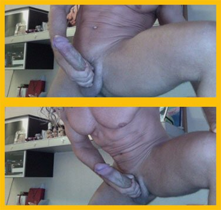

Tarzan: "A szexuális hódításhoz elengedhetetlen a hatalmas
és erős
pénisz! Most elárulom nektek
a siker titkát!"
A péniszem egy hónappal ezelőtt és most
Sziasztok! Gondolom már rengetegszer hallottátok az olyan közhelyeket, mint a "Nem a méret lényeg", "A méret nem számít, csak az, hogy hogyan használod", stb. Ezeket ti tényleg beveszitek? Az igaz, hogy sokat számítanak a belső tulajdonságok és az érzések. Mint például a gyengédség, a bizalom, és sok más, de szex közben a méret a legfontosabb . A nőket egy nagy és erős pénisznek már a gondolata is tűzbe hozza, ellentétben az aprócska, petyhüdt rudikkal .
Igaz, a tapasztalatlan vagy egyszerűbb lányoknak ez nem annyira fontos, de ők számomra érdektelenek. Nekem fontos a szenvedély az ágyban, a féktelen szex, de ha neked elég a misszionárius póz a takaró alatt, akkor akár el is hagyhatod ezt az oldalt.
Viszont, ha azt szeretnéd, hogy a nők sikolyától még a szomszéd farka is felálljon, akkor egy átlagos méretű pénisz nem elég, nagyobbra lesz szükség.
Hogyan érhető el a hatalmas és
vastag farok?
Őszinte leszek, nem vagyok igazán önzetlen, a terméket , amiről beszélni fogok, eddig PÉNZÉRT hirdettem. Ez nem csak valami sima, felnőtteknek készült gél, hanem egy rendkívül hatékony termék, amit MAGAM teszteltem.
Háttértörténet
A 90-es években felköltöztem a fővárosba, ahogy akkoriban sokan mások. Sokáig nem találtam normális munkát, kevés dologhoz értettem. Az egyetlen előnyöm a külsőm volt , így azzal kezdtem el pénzt keresni. Eleinte modellként dolgoztam, még néhány videóban is szerepeltem, viszont a fizetésem kevés volt. Ezért úgy döntöttem, kipróbálom a sztriptízt. Miért is ne, könnyű meló, csak ráznod kell a feneked és hagyni, hogy a kielégítetlen nők fogdossanak.
Azonban a munkám napról napra kimerítőbb volt. Néhány hónap után feltűnt, hogy már egyáltalán nem vagyok népszerű a sztriptízbárban. Pontosan tudtam, hogy ennek mi az oka. Nagy farkú srácok csatlakoztak a bárhoz . Az összes kliensem őket választotta helyettem. Mit is tehetnék?
Nem tudtam mit kezdeni ezzel a helyzettel. Egy Egyesült Államokban élő barátomat kértem meg, hogy hozzon nekem valamilyen pénisznagyobbító . Egy vagyont fizettem érte, többet, mint egy havi fizetésem! De a barátom garantálta a 100%-os minőséget, még a saját eredményét is meg akarta mutatni, de inkább hittem neki.
Elkezdtem használni a és naponta ellenőriztem a péniszméretem. Az első pár napban semmi sem történt. Azt hittem, hogy ez csak egy újabb átverés volt, aminek bedőltem. Aztán, egy héttel később a péniszem 1 centit nőtt! Nem is rossz eredmény, ilyen rövid idő alatt. Újabb egy héttel később, még 2 centit nőtt. Egy hónap után már +7 cm-nél tartottam ! És nem csak megnyúlt, vastagabb is lett!
A növekedés sebessége lelassult, ahogy a péniszem mérete közeledett a természetes korlátaihoz. Az anyatermészet mindent kordában tart. De nekem ez bőven elég volt!
Ekkor jött el Tarzan ideje. A 90-es évek végén szingli voltam, és a lányok rögtön észrevették a nadrágomban történt változásokat. Több, mint tízszer annyi nő figyelte a fellépéseimet, mindenhol ott voltak, le sem bírtam őket vakarni! Az alakom egyáltalán nem változott, izmosabb sem lettem, így egyértelmű volt, hogy minek köszönhetem ezt a hirtelen jött népszerűséget.
Srácok, néhány fontos dolog a gél működéséről, csak hogy megszüntessem a kételyeket. A pénisz nem csak egy izom. A mérete a vérbőségtől változik, nem az izomrostoktól. A híres Viagra is úgy működik, hogy vérrel látja el a péniszt. Éppen ezért LEHETETLEN fizikai gyakorlatokkal változtatni a méretén!
A pénisz nagyobbításához fontos a rugalmasság növelése is. A benne lévő különleges anyagok segítségével, a gél ezen is segít. Semmilyen csodáról nincs szó. Idővel a pénisz "igazodik" az új méretéhez, és akkor már nincs szükség a gélre, a megnövelt méret állandósul. A alkotó összes anyag természetes, és nem rendelkezik semmilyen mellékhatással. Ahogy ti is láthatjátok, egészséges vagyok, és remekül érzem magam.
Ezt az eredményt értem el. Nem is rossz, ugye? BÁRKI képes ekkora péniszt növeszteni magának!
Nemrég hallottam, hogy a gél már Magyarországon is elérhető. A termék hivatalos oldalán árulják . Jelenleg, nagyon kedvező áron vásárolható meg, közel sem több százezer forintért, amennyiért én szereztem az Egyesült Államokból. Úgyhogy srácok, rajtatok a sor!
Na, ez ám a hatalmas husáng:)) Nem hittem volna, hogy ez egyáltalán lehetséges. Biztos, hogy nem Photoshop?
Köszönöm. Tegnap vettem át a csomagot a postán. El is kezdem használni a . Egyébként az ár is megfizethető… még 50%-os kedvezményt is kaptam valami különleges ajánlat miatt
Az öcsém az USA-ban él. Azt mondja, ez a gél (vagy valami ehhez nagyon hasonló cucc) NAGYON népszerű náluk... Mindenki azt használja.
Szia Tarzan! Nagy rajongód vagyok, mindig is imádtalak! Azoknak, akik nem hiszik el, garantálom, hogy ez nem Photoshop. Ezek valódi képek. Csak menjetek el valamelyik fellépésére és meglátjátok.
Már második hete használom. A péniszem MEGNŐTT , majdnem 3 centivel! A szexuális teljesítményem olyan lehengerlő, hogy a barátnőm azt hiszi, gyógyszereket szedek! :)
Csak abban bízom, hogy ez nem egy újabb átverés
Több, mint 4 centit nőtt a péniszem . Már nem használom a … nekem ez bőven elég :)))
Szerintem is jó lesz úgy, ahogy van :)
Ha merev állapotban 10 centis a péniszed, te nem próbálnál tenni valamit az ügy érdekében? Először fizikai gyakorlatokkal kísérleteztem, de kicsit sem segített, most már értem miért, a cikkben elmagyarázzák. Aztán megvettem a . Az eredmény +6 cm!!!
Ezek az új technológiák először mindig az USA-ban meg Nyugat-Európában jelennek meg, hozzánk szokás szerint minden utoljára jut el...
Én csak kíváncsiságból rendeltem . Nem igazán hiszek az ilyen dolgokban...
Köszönöm a linket, rendelek egyet a barátomnak, majd úgy teszek, mintha valamilyen erotikus masszázst adnék neki :)) Magától nem ismerné el, hogy szüksége van rá:)))
Igaz, amit az árról mondanak. A terméket nagyon jó áron rendeltem meg, 50%-os kedvezménnyel !!